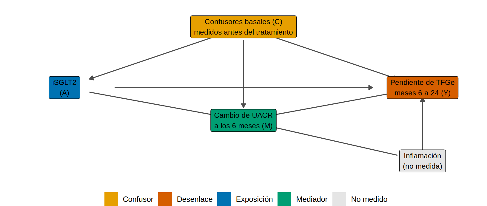
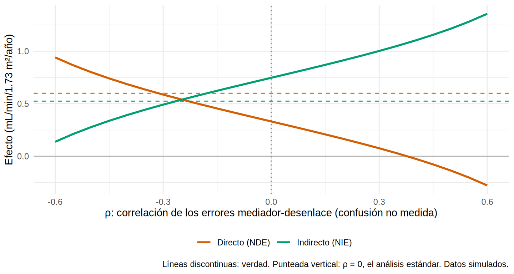

library(tidyverse)
library(boot)
source("R/funciones_epi.R")
source("R/funciones_extra_cap18.R")
oraculo <- cargar_mediacion("_u") # SIMULADO: hay una inflamación no medida que afecta a M y a Y
ckd <- observar_mediacion(oraculo) # lo que ves tú: sin la inflamación
verdad <- verdad_mediacion(oraculo) # la verdad (solo porque simulamos)Interpretación clínica: ¿la albuminuria media el efecto del iSGLT2?
Nota🩺 Escenario
El comité de farmacia te pregunta: “Si el iSGLT2 protege el riñón por la baja de albuminuria, podríamos usar la UACR a los 6 meses para decidir quién sigue con el fármaco y para diseñar ensayos más cortos. Si protege por otras vías, no. ¿Qué dicen nuestros datos?”. Tienes una cohorte con UACR basal y a los 6 meses y con la pendiente de TFGe de los meses 6 a 24. Ya conoces las herramientas; falta usarlas con criterio y decidir qué se puede afirmar.
Este subcapítulo es un análisis completo, de principio a fin: pregunta, DAG, estimación, comparación con la verdad, sensibilidad y reporte. Es el flujo que seguirías en un artículo.
Lo que vamos a hacer
- Definir la pregunta de mediación con su línea de tiempo (el mediador se mide después del tratamiento y antes del desenlace).
- Estimar los efectos con un confusor mediador-desenlace no medido escondido en los datos y ver qué pasa.
- Hacer un análisis de sensibilidad y aprender a reportar sin sobreafirmar.
Paso 1. La pregunta, por escrito
Antes de tocar datos, escribe el “protocolo” del análisis de mediación (es lo que pedirá cualquier revisor):
- Población: adultos con ERC G3-G4 y diabetes tipo 2 (5 000 pacientes, simulados).
- Exposición (A): inicio de iSGLT2 (2 217 pacientes) frente a no iniciar.
- Mediador (M): cambio del ln(UACR) entre el mes 0 y el mes 6 (
delta_lnuacr). - Desenlace (Y): pendiente de TFGe entre los meses 6 y 24.
- Confusores basales (C): edad, sexo, HbA1c, PAS, TFGe, ln(UACR) y ECV, todos medidos antes de la exposición.
- Estimandos: efecto total (TE), directo natural (NDE) e indirecto natural (NIE) en mL/min/1.73 m²/año.
La línea de tiempo no es un detalle de forma: es lo que hace que el análisis tenga sentido. Si la pendiente de TFGe incluyera los primeros 6 meses, el mediador se habría medido en medio del desenlace y no podría ser su causa. Si midieras la PAS a los 6 meses y la metieras entre las covariables, estarías ajustando por una variable posterior al tratamiento (el confusor del supuesto 4, 18.3). Y los pacientes que murieron o iniciaron diálisis antes del mes 6 no tienen mediador: o se excluyen explícitamente (diciéndolo) o se justifica un análisis alternativo (10.2).
Dibujemos el DAG que asumes, incluida la sospecha que tiene el comité: la inflamación que sube la albuminuria y empeora la pendiente, y que tú no mediste.
nodos <- tribble(~nombre, ~x, ~y, ~etiqueta, ~rol,
"C", 2, 2.2, "Confusores basales (C)\nmedidos antes del tratamiento", "confusor",
"A", 1, 1, "iSGLT2\n(A)", "exposicion",
"M", 2, 0.35, "Cambio de UACR\na los 6 meses (M)", "mediador",
"Y", 3, 1, "Pendiente de TFGe\nmeses 6 a 24 (Y)", "desenlace",
"U", 3, -0.45, "Inflamación\n(no medida)", "no medido")
aristas <- tribble(~de, ~a,
"C", "A", "C", "M", "C", "Y",
"A", "M", "M", "Y", "A", "Y",
"U", "M", "U", "Y")
dibujar_dag(nodos, aristas, tam_texto = 3.2, expandir = c(0.18, 0.2))
Ese DAG viola el supuesto 2 de 18.3: hay una causa común no medida de M y Y. Lo sabemos porque lo simulamos; en la vida real, es la sospecha que debes plantear tú.
Paso 2. El análisis estándar: ¿qué dirían los datos?
Hacemos exactamente lo de 18.2: dos modelos con los mismos confusores, el producto y un bootstrap de todo el procedimiento. Antes, comprobamos si hay interacción fármaco × mediador (si la hubiera, iríamos al 18.4):
m_med0 <- lm(delta_lnuacr ~ isglt2 + I(edad / 10) + sexo + hba1c + pas + tfg_basal + luacr + ecv, data = ckd)
m_i <- lm(pendiente_tfg ~ isglt2 * delta_lnuacr + I(edad / 10) + sexo + hba1c + pas + tfg_basal + luacr + ecv, data = ckd)
m_n <- update(m_i, . ~ . - isglt2:delta_lnuacr)
p_int <- anova(m_n, m_i)$`Pr(>F)`[2]
ic_int <- confint(m_i)["isglt2:delta_lnuacr", ]
nie_con <- descomponer(efectos_naturales(ckd, m_med0, m_i))[["NIE"]] # fórmula g con interacción
nie_sin <- descomponer(efectos_naturales(ckd, m_med0, m_n))[["NIE"]] # fórmula g sin interacción
round(c(coef_interaccion = unname(coef(m_i)["isglt2:delta_lnuacr"]), p = p_int, NIE_con_interaccion = nie_con, NIE_sin_interaccion = nie_sin), 3) coef_interaccion p NIE_con_interaccion NIE_sin_interaccion
0.133 0.041 0.722 0.747 La interacción es pequeña (coeficiente 0.13, IC 0.01 a 0.26; en 18.4 era de -1) y apenas significativa (p = 0.04). Incluirla casi no cambia el efecto indirecto (0.72 con interacción frente a 0.75 sin ella), así que seguimos con el método de productos y lo anotamos como análisis de sensibilidad. Significativo no es importante (8.4). Los efectos y su IC por bootstrap:
set.seed(185)
b <- boot(ckd, ajustar_mediacion, R = 500)
nombres <- c(TE = "Total", NDE = "Directo", NIE_producto = "Indirecto", PM = "Proporción mediada")
tab <- tibble(efecto = names(b$t0), estimado = b$t0,
ic_inf = map_dbl(seq_along(b$t0), \(k) boot.ci(b, type = "perc", index = k)$percent[4]),
ic_sup = map_dbl(seq_along(b$t0), \(k) boot.ci(b, type = "perc", index = k)$percent[5])) |>
filter(efecto %in% names(nombres)) |>
mutate(verdad = unname(verdad[c("TE", "NDE", "NIE", "PM")]),
efecto = nombres[efecto])
tab |> mutate(across(where(is.numeric), \(x) round(x, 2)))# A tibble: 4 × 5
efecto estimado ic_inf ic_sup verdad
<chr> <dbl> <dbl> <dbl> <dbl>
1 Total 1.08 0.97 1.19 1.12
2 Directo 0.33 0.25 0.4 0.6
3 Indirecto 0.75 0.68 0.82 0.52
4 Proporción mediada 0.69 0.64 0.76 0.47Qué vemos. El análisis dice: efecto indirecto 0.75 (IC 95 % 0.68 a 0.82), directo 0.33, y una proporción mediada de 69 %. Un informe ingenuo escribiría: “casi el 69 % del efecto del iSGLT2 se explica por la baja de albuminuria”.
Pero la verdad es otra: el indirecto real es 0.52 (fuera del IC) y la proporción mediada real, 47 %. El efecto total sí está bien estimado (1.08 frente a 1.12): lo que falla es el reparto. La inflamación hace que los pacientes con más albuminuria tengan peor pendiente por una causa que no es la albuminuria, y el modelo lo atribuye a ella.
Observa lo que no nos avisó: ningún indicador de ajuste, ni el IC (angosto), ni la significación. El resultado es “bonito y equivocado”. Por eso hace falta el siguiente paso.
Paso 3. Análisis de sensibilidad: ¿cuánto sesgo haría falta para cambiar la conclusión?
No podemos medir la inflamación, pero sí podemos preguntar: si existiera un confusor así, ¿cuánto cambiaría el resultado? La idea (Imai, Keele y Yamamoto) es parametrizar la confusión no medida con un solo número, \(\rho\): la correlación entre los errores del modelo del mediador y del modelo del desenlace. Con \(\rho = 0\) (nuestro análisis estándar) no hay confusor no medido. Un \(\rho\) negativo significa que lo que sube la albuminuria tiende a empeorar la pendiente (justo lo que haría la inflamación). La función sensibilidad_rho() recalcula el efecto indirecto para cada \(\rho\) (para modelos lineales):
sens <- sensibilidad_rho(ckd)
rho_cero <- rho_anula_nie(ckd)
sens |> filter(rho %in% c(-0.4, -0.3, -0.2, -0.1, 0, 0.1)) |> mutate(across(everything(), \(x) round(x, 2)))# A tibble: 6 × 4
rho NIE NDE PM
<dbl> <dbl> <dbl> <dbl>
1 -0.4 0.39 0.69 0.36
2 -0.3 0.49 0.59 0.46
3 -0.2 0.58 0.5 0.54
4 -0.1 0.67 0.41 0.62
5 0 0.75 0.33 0.69
6 0.1 0.83 0.25 0.77sens |>
pivot_longer(c(NIE, NDE), names_to = "efecto", values_to = "valor") |>
mutate(efecto = recode(efecto, NIE = "Indirecto (NIE)", NDE = "Directo (NDE)")) |>
ggplot(aes(rho, valor, color = efecto)) +
geom_hline(yintercept = 0, color = "grey70") +
geom_vline(xintercept = 0, linetype = "dotted", color = "grey50") +
geom_line(linewidth = 1) +
geom_hline(yintercept = c(verdad[["NIE"]], verdad[["NDE"]]), linetype = "dashed", color = c("#009E73", "#D55E00")) +
scale_color_manual(values = c("Indirecto (NIE)" = "#009E73", "Directo (NDE)" = "#D55E00"), name = NULL) +
labs(x = "ρ: correlación de los errores mediador-desenlace (confusión no medida)",
y = "Efecto (mL/min/1.73 m²/año)",
caption = "Líneas discontinuas: verdad. Punteada vertical: ρ = 0, el análisis estándar. Datos simulados.") +
theme_minimal(base_size = 11) + theme(legend.position = "bottom")
Qué vemos. En \(\rho = 0\) (el análisis estándar) el indirecto es 0.75. A medida que \(\rho\) se vuelve negativo, el indirecto cae y el directo sube. El efecto indirecto desaparecería recién con \(\rho\) = -0.68: una confusión muy fuerte. Es decir, la dirección de la conclusión (“hay algo de mediación”) es robusta, pero su magnitud no: con un \(\rho\) de -0.3 el indirecto ya baja a 0.49 (y la proporción mediada a 46 %), muy cerca de la verdad (0.52). Ojo: lo sabemos porque simulamos la inflamación con un \(\rho\) real de unos -0.3; en la vida real no conoces el \(\rho\) verdadero, solo puedes explorar la curva.
¿Es -0.3 un \(\rho\) plausible? Traducirlo a la clínica
La pregunta que haría cualquier lector es: “¿qué tan fuerte es un \(\rho\) de -0.3?”. Depende de cuánto mueve el confusor al mediador y al desenlace. La función rho_implicito() lo calcula para un confusor hipotético estandarizado (por cada desviación estándar de, por ejemplo, un marcador de inflamación):
sd_m <- sigma(lm(delta_lnuacr ~ isglt2 + I(edad / 10) + sexo + hba1c + pas + tfg_basal + luacr + ecv, data = ckd))
hipoteticos <- tribble(~confusor_hipotetico, ~efecto_m, ~efecto_y,
"Débil", 0.10, -0.3,
"Moderado", 0.25, -0.8,
"Fuerte", 0.40, -1.2) |>
mutate(rho = map2_dbl(efecto_m, efecto_y, \(em, ey) rho_implicito(em, ey, sd_m = 0.45, sd_y = 1.0)))
hipoteticos |> mutate(across(where(is.numeric), \(x) round(x, 2)))# A tibble: 3 × 4
confusor_hipotetico efecto_m efecto_y rho
<chr> <dbl> <dbl> <dbl>
1 Débil 0.1 -0.3 -0.06
2 Moderado 0.25 -0.8 -0.3
3 Fuerte 0.4 -1.2 -0.51Cómo se lee. Un confusor moderado (por cada desviación estándar, sube el ln(UACR) en 0.25, un +28 % de albuminuria, y baja la pendiente en 0.8 mL/min/1.73 m²/año) equivale a un \(\rho\) de -0.30. Uno débil, a -0.06, que apenas cambia el resultado. Para llegar al \(\rho\) que anula el efecto indirecto (-0.68) haría falta algo mucho más fuerte que un confusor “fuerte” (-0.51). Eso es lo que quieres poder decir en el artículo: no “no hay confusión”, sino “la conclusión cualitativa resiste hasta un \(\rho\) de X; la cuantitativa, no”.
(Nota: este cálculo supone, como en el simulador, que el confusor tiene ruido propio de 0.45 en el mediador y de 1.0 en el desenlace; en datos reales esos valores salen de los residuos de tus modelos.)
Con el paquete mediation (código no verificado en el entorno de pruebas del libro)
mediation::medsens() hace el mismo análisis de sensibilidad (su \(\rho\) es la misma correlación entre errores) con la versión sin bootstrap de mediate(), que usa simulación cuasi-bayesiana:
library(mediation)
m_med <- lm(delta_lnuacr ~ isglt2 + I(edad / 10) + sexo + hba1c + pas + tfg_basal + luacr + ecv, data = ckd)
m_out <- lm(pendiente_tfg ~ isglt2 + delta_lnuacr + I(edad / 10) + sexo + hba1c + pas + tfg_basal + luacr + ecv, data = ckd)
set.seed(185)
med_qb <- mediate(m_med, m_out, treat = "isglt2", mediator = "delta_lnuacr", sims = 1000) # sin boot: lo exige medsens
sens_pkg <- medsens(med_qb, rho.by = 0.1, effect.type = "indirect", sims = 500)
summary(sens_pkg) # ρ al que el ACME cruza 0 y su IC
plot(sens_pkg, sens.par = "rho", main = "Sensibilidad del efecto indirecto")Paso 4. Lo mismo con CMAverse (código no verificado en el entorno de pruebas del libro)
CMAverse (Shi, Choirat, Coull, VanderWeele y Valeri) reúne en una sola función, cmest(), los modelos de este capítulo: regresión (model = "rb"), fórmula g ("gformula"), con confusores posteriores al tratamiento (postc) y con interacción (EMint = TRUE). Devuelve el CDE, el NDE y NIE naturales (puros y totales), las cuatro vías de 18.4 y la proporción mediada. Su regresión equivale a lo que hicimos a mano:
library(CMAverse)
res_rb <- cmest(data = as.data.frame(ckd), model = "rb",
outcome = "pendiente_tfg", exposure = "isglt2", mediator = "delta_lnuacr",
basec = c("edad", "sexo", "hba1c", "pas", "tfg_basal", "luacr", "ecv"), # confusores basales
EMint = FALSE, # TRUE si hay interacción exposición x mediador
mreg = list("linear"), yreg = "linear",
astar = 0, a = 1, # comparamos a = 1 (iSGLT2) con a* = 0
mval = list(0), # nivel del mediador para el efecto controlado
estimation = "paramfunc", inference = "bootstrap", nboot = 200)
summary(res_rb)Y cuando sí tienes una variable posterior al tratamiento que confunde mediador y desenlace (la PAS a los 6 meses, supuesto 4), la salida es cambiar a la fórmula g con postc, que estima los efectos con ese confusor en el DAG:
res_g <- cmest(data = as.data.frame(ckd), model = "gformula",
outcome = "pendiente_tfg", exposure = "isglt2", mediator = "delta_lnuacr",
basec = c("edad", "sexo", "hba1c", "pas", "tfg_basal", "luacr", "ecv"),
postc = "pas_6m", postcreg = list("linear"), # confusor M-Y afectado por A
EMint = TRUE, mreg = list("linear"), yreg = "linear",
astar = 0, a = 1, mval = list(0),
estimation = "imputation", inference = "bootstrap", nboot = 200)
summary(res_g)Eso sí: CMAverse no crea supuestos. Con la inflamación sin medir, también daría un resultado equivocado; la sensibilidad sigue siendo imprescindible.
Paso 5. Qué escribir (y qué no)
Con todo lo anterior, esta sería una conclusión honesta para el artículo (las cifras salen del análisis):
“En 5 000 adultos con ERC y diabetes (simulados), iniciar un iSGLT2 se asoció con una mejor pendiente de TFGe (efecto total 1.08 mL/min/1.73 m²/año, IC 0.97 a 1.19). Bajo los supuestos de ausencia de confusión de la exposición-desenlace, mediador-desenlace y exposición-mediador, y ninguna confusión afectada por el tratamiento, un efecto indirecto a través del cambio de UACR a los 6 meses de 0.75 (IC 0.68 a 0.82) sugiere que la albuminuria es parte del mecanismo, pero no puede afirmarse qué porcentaje: un confusor no medido con ρ = -0.3 reduciría el efecto indirecto a 0.49 y llevaría la proporción mediada a 46 %.”
Dos cosas que esa frase evita: (1) decir “explica el X %”, y (2) concluir que la UACR es un “marcador sustituto” del efecto. Que una variable medie parte del efecto no la convierte en un buen sustituto (un sustituto válido exige que capte todo el efecto, no solo una parte, y que lo haga en cualquier tratamiento: es otra pregunta, otro análisis).
Tip💡 Lista de control para publicar un análisis de mediación
La guía AGReMA (Lee et al., JAMA 2021) reúne qué reportar; estos son los puntos que más pesan, en palabras nuestras:
Importante🎯 En resumen
- Un análisis de mediación empieza por escribir la pregunta, los estimandos y la línea de tiempo (exposición → mediador → desenlace), y por dibujar el DAG, incluidos los confusores que no mediste.
- Con un confusor mediador-desenlace no medido, el total sale bien pero el reparto no: aquí la proporción mediada ingenua fue de 69 % cuando la verdad era 47 %, y el IC no contenía el valor verdadero.
- El análisis de sensibilidad (ρ) dice cuánta confusión haría falta para cambiar la conclusión; tradúcelo a fuerzas clínicas plausibles.
mediation(mediate,medsens) yCMAverse(cmest) automatizan los cálculos, pero no los supuestos.- Reporta con cautela: “parte del efecto es consistente con mediación”, no “el X % está mediado”.
Ejercicio
- Repite el análisis con la base sin confusor no medido (
cargar_mediacion()). ¿Cae la verdad dentro del IC del efecto indirecto? ¿Cuál es ahora el \(\rho\) que anula el NIE? - Con
ckd_mediacion_u, calcula el \(\rho\) implícito de un confusor “fuerte” pero con efecto sobre el mediador de +0.4 y sobre el desenlace de +1.0 (es decir, que mejora la pendiente). ¿Hacia dónde mueve el efecto indirecto? - Redacta, con tus propias palabras y las cifras de tu salida, el párrafo de limitaciones de un artículo con este análisis. ¿Qué dirías de la inflamación?